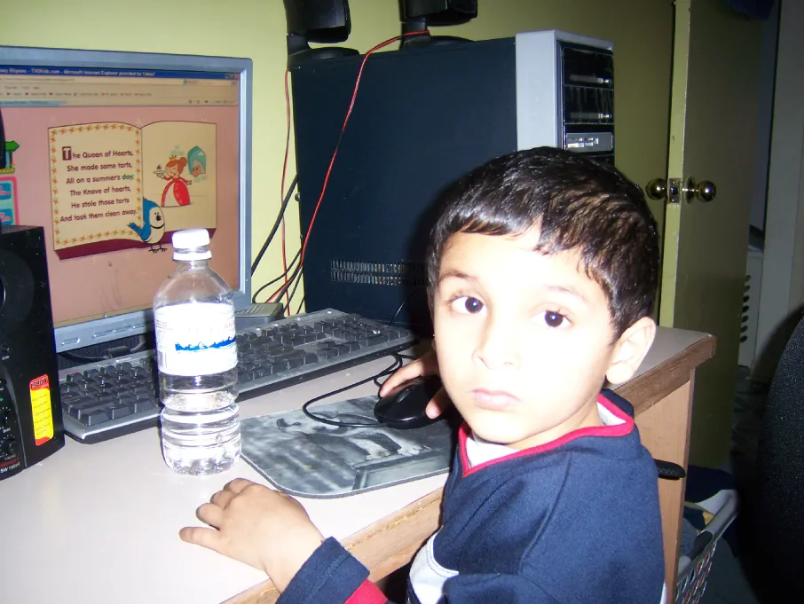
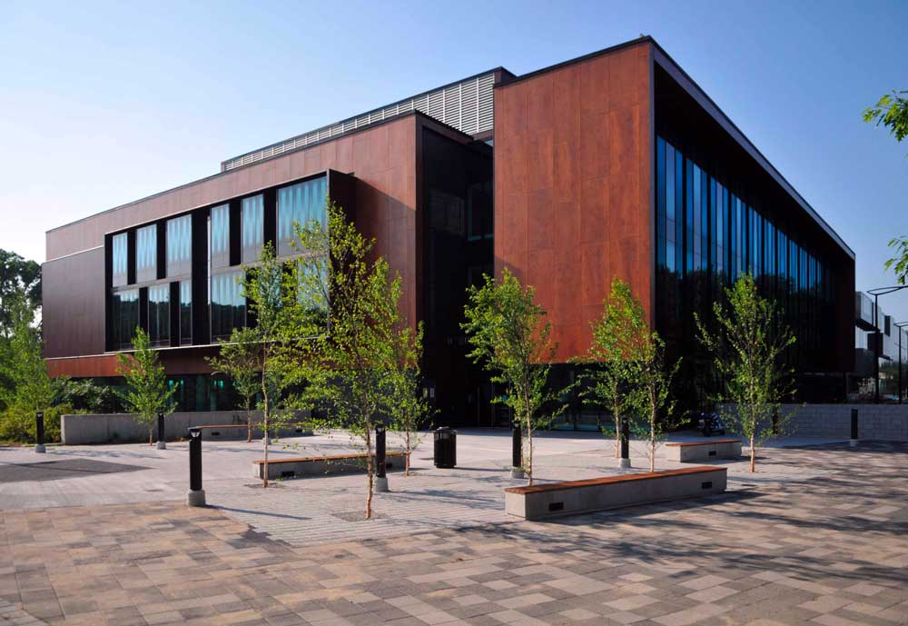
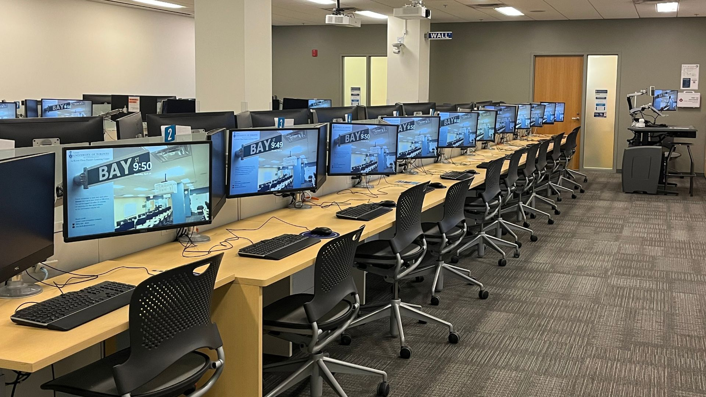
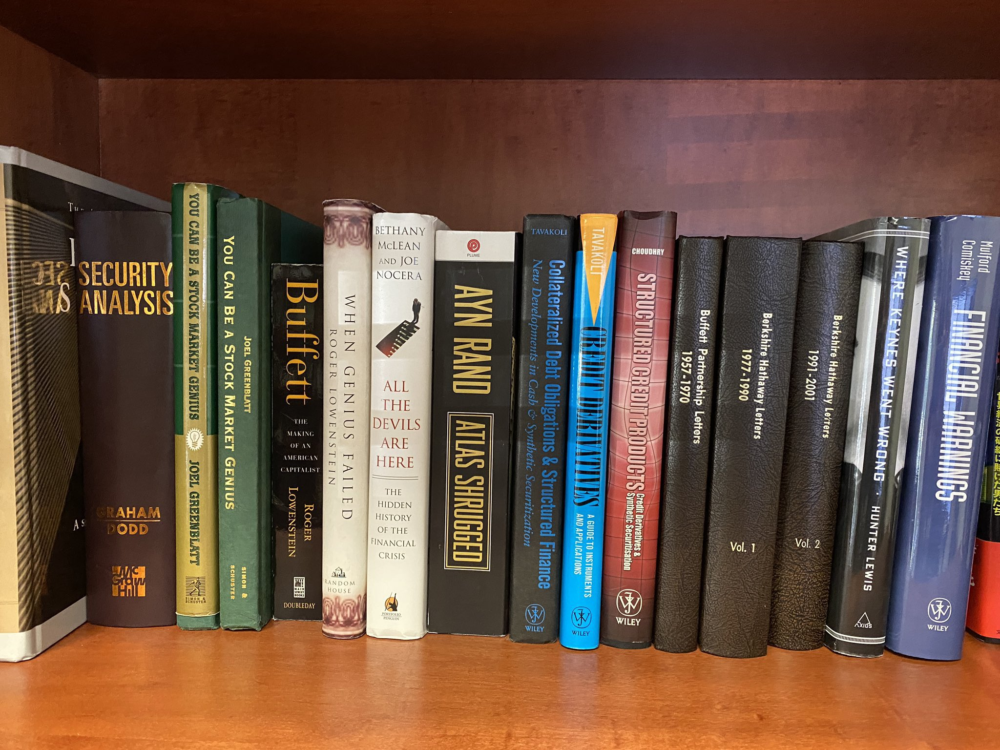

I’ve always believed curiosity is one of the better ways to understand the world. Most things I’ve learned started with wanting to know how something worked.
Growing up, I was naturally curious. I liked taking an idea apart, understanding the pieces, and figuring out how they fit back together.
A lot of that curiosity started with computers. I could spend hours exploring the internet, various applications and games, or messing around with technology simply because I wanted to understand what was possible.
Eventually, playing with technology turned into wanting to understand the technology itself.
How were things built? How did software work? How did the internet connect everything together? And how could someone sitting at a computer turn an idea into something real?

The internet changed the way I learned.
Suddenly, almost anything I wanted to understand was somewhere in front of me. Tutorials, forums, videos, documentation, people halfway across the world who had already solved the problem I was stuck on.
I learned that not knowing how to do something wasn't much of a barrier. Usually, it just meant I hadn't spent enough time figuring it out yet.
That idea has stayed with me.


As I got older, my interests expanded into mathematics, economics, finance, and statistics.
They seemed like separate subjects at first. Eventually, I realized they were connected by something I had always been interested in: systems.
Mathematics gave me a way to break complicated problems into smaller ones. Economics helped me understand incentives and why people make the decisions they do. Statistics gave me a way to extract information from uncertainty.
And finance brought many of those ideas together in real time.
Markets especially fascinated me. Millions of people can have access to the same information and still arrive at completely different conclusions about what something is worth.
Why?
That seemed like a problem worth understanding.

That curiosity is what eventually led me to study mathematics, economics, and statistics at the University of Toronto. The subjects may have changed over the years, but the process hasn’t: find something interesting, understand how it works, learn what I don’t know, and see what I can build from it.
I’m not entirely sure where that process will take me. Technology will change, markets will change, and some of the most interesting problems I’ll work on probably aren’t problems I know about yet.
There is still an absurd amount I don't know.
That's probably my favourite part.
I read, think, build, and try to understand a little more each day. I'm drawn to difficult problems and the challenge of figuring them out.
Fortunately, there are plenty left.